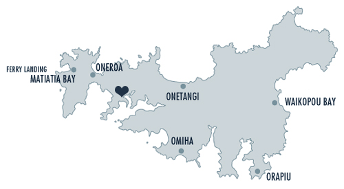

Information
Wedding Venue
The Goldie Room | 18 Causeway Road, Waiheke Island, Auckland.
Centrally located on the island’s main road, The Goldie Room is a 10 minute drive from Matiatia ferry terminal.
How to get there
Ferry
A ferry service runs from Auckland CBD (99 Quay Street) to Waiheke Island approximately every hour, with the last return ferry to Auckland departing Matiatia wharf at midnight. One adult return fare is $36.00.
Shuttle
A bus will be available for transport from your accommodation to the wedding venue, The Goldie Room in time for the 3.00pm ceremony.
A bus will also be provided to take you home after the festivities, one departing at 10.30pm and the other at 12 midnight.
They can collect from Oneroa, Palm Beach and Onetangi. For those catching the ferry home to Auckland on the night of the wedding, they will also make a stop at the Ferry Terminal.
Please email the bride’s mum, Lynn Tebbutt with your accommodation address on Waiheke if you wish to be collected and delivered on the big day. Her email address is: lynntebbutt@windowslive.com
Taxi
There will be a number of taxis pre-booked to depart the venue at 10.00pm and midnight for the ferry terminal.
As it is Easter weekend, the island is likely to be very busy and taxis could be at a premium, but should you wish to arrange your own transport, please contact one of the local operators below...
Island Taxis - 0800 372 4111
Waiheke Independant Taxis - 09 372 3000
Waiheke Executive Transport - 09 372 0088
Parking
If you need parking at the venue, please let us know and we can reserve a space for you. Just remember to tick yes for parking when you RSVP.
Accomodation
Waiheke is a popular holiday destination. The majority of accomodation is in the form of holiday houses and baches. We recommend www.bookabach.co.nz if you’re travelling in a group or you wish to stay on the island for all of Easter weekend.
www.waiheke.co.nz also has listings for a limited number of apartments, bed and breakfasts and lodges.
Vineyards
We've dined at all of these vineyards and highly recommend them for great food, wine and views: Cable Bay Vineyard, Mudbrick Vineyard, Man O War Vineyard, Peacock Sky Vineyard and Te Whau.
Beaches
Wander along the white sand at Oneroa and Onetangi beaches – two of the island’s best – and take a dip in the sheltered waters.
Activities
There are plenty of activities for all levels of adventure seekers on Waiheke. For those more outdoorsy, you can try archery and laser clay pigeon shooting, hire a scooter, take a scenic flight or zoom across the tree tops on a flying fox zipline. For those after a bit of history on the island, you can take to the tunnels and gun emplacements at Stony Batter Historic Reserve, an old World War II fort, or for those of you looking to check out Waiheke’s fantastic arts scene there are great local galleries and studios to visit.
Visit www.tourismwaiheke.co.nz for more.